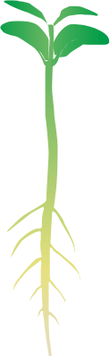

ПРЕПАРАТИ І СТРОКИ ЇХ ЗАСТОСУВАННЯ НА СОЇ
Умовні позначення:
Таблиця рухома по довжині
| ШКІДЛИВИЙ ОБ'ЄКТ | ПРЕПАРАТ |
| Пліснявіння насіння, фузаріоз, кореневі гнилі, аскохітоз |
МАКСИМ XL 1,0 л/т |
| Аскохітоз, фузаріоз, пітіозна коренева гниль |
МАКСИМ АДВАНС 1,0-1,2 л/т |
| Комплекс ґрунтових шкідників |
ФОРС 1,5G 6,0-8,0 кг/га |
| Однорічні і багаторічні бур’яни |
УРАГАН ФОРТЕ 2,0-4,0 л/га |
| Однорічні злакові і деякі дводольні бур’яни |
ДУАЛ ГОЛД 1,3-1,6 л/га |
| Однорічні дводольні та деякі злакові бур’яни |
ГЕЗАГАРД 3,0-5,0 л/га |
| Однорічні злакові та дводольні бур’яни |
ПРИМЕКСТРА TZ ГОЛД 3,0-4,5 л/га |

Таблиця рухома по довжині
| ШКІДЛИВИЙ ОБ'ЄКТ | ПРЕПАРАТ |
| Однорічні і багаторічні злакові бур’яни |
ФЮЗІЛАД ФОРТЕ 1,0-2,0 л/га |
| Борошниста роса, несправжня борошниста роса, фузаріоз, іржа, пероноспороз |
АМІСТАР ЕКСТРА 0,5-0,75 л/га |
Таблиця рухома по довжині
| ШКІДЛИВИЙ ОБ'ЄКТ | ПРЕПАРАТ |
| Однорічні і багаторічні злакові бур’яни |
ФЮЗІЛАД ФОРТЕ 1,0-2,0 л/га |
| Борошниста роса, несправжня борошниста роса, фузаріоз, іржа, пероноспороз |
АМІСТАР ЕКСТРА 0,5-0,75 л/га |
| Павутинний кліщ |
ВЕРТИМЕК 0,6-0,8 л/га |
| Кліщі, тлі |
АКТЕЛЛІК 1,5-2,0 л/га |
| Бавовникова совка, люцернова совка, акацієва вогнівка, чортополохівка, попелиці |
АМПЛІГО 0,3-0,4 л/га |
Таблиця рухома по довжині
| ШКІДЛИВИЙ ОБ'ЄКТ | ПРЕПАРАТ |
| Однорічні і багаторічні злакові бур’яни |
ФЮЗІЛАД ФОРТЕ 1,0-2,0 л/га |
| Борошниста роса, несправжня борошниста роса, фузаріоз, іржа, пероноспороз |
АМІСТАР ЕКСТРА 0,5-0,75 л/га |
| Павутинний кліщ |
ВЕРТИМЕК 0,6-0,8 л/га |
| Кліщі, тлі |
АКТЕЛЛІК 1,5-2,0 л/га |
| Бавовникова совка, люцернова совка, акацієва вогнівка, чортополохівка, попелиці |
АМПЛІГО 0,3-0,4 л/га |
Таблиця рухома по довжині
| ШКІДЛИВИЙ ОБ'ЄКТ | ПРЕПАРАТ |
| Однорічні і багаторічні бур’яни |
УРАГАН ФОРТЕ 2,0-4,0 л/га |
| Десикація |
РЕГЛОН СУПЕР 2,0-3,0 л/га |
| Десикація |
РЕГЛОН ЕЙР 1,5-2,0 л/га |